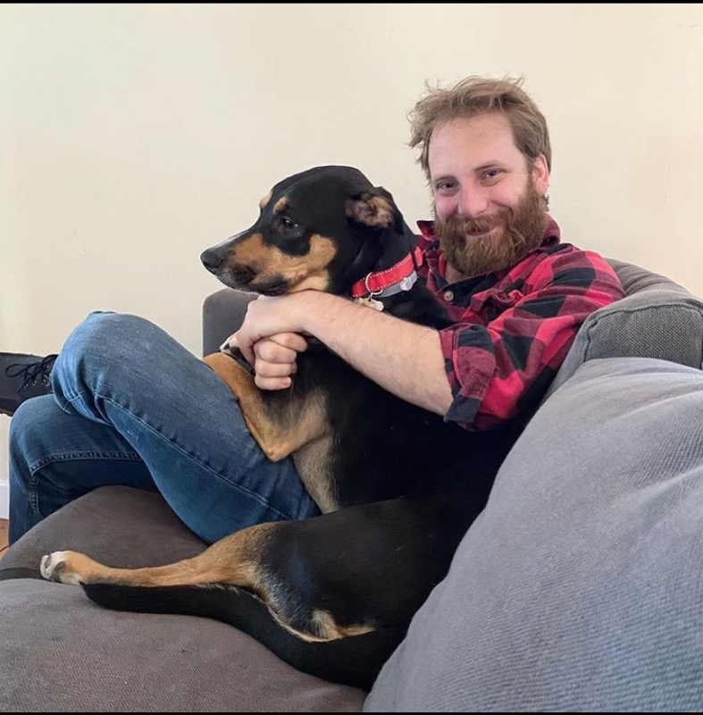

Biography
My name is Ryan Royalty and I currently work as a FileMaker developer and data analyst for Foresight Regulatory Strategies, Inc, where we run clinical trials on contact lenses and other eye related medical products. I've been working for Foresight for four years and I'm taking the UNH Bootcamp course with my Boss's blessing. The skills I will develop through the course will be useful in my current job as well as make me signficantly more marketable for any future endeavors I may pursue.
Through my work at Foresight and/or with the FileMaker platform, I have developed proficiences in PowerQuery, VBA, SQL, and JSON.I look forward to taking my coding to the next level with this course.
I attended UMass Amherst from 2003 to 2008, where I earned a B.S. in Mathematics. While there, I also studied to be a high school teacher. After two years of teaching, I concluded that the profession was not a good fit for me, and moved onto other things. After teaching, I worked as a server and bartender at Chili's for a few years before moving to Boston in search of better things.
Once in Boston, I took a job as a dog walker and petsitter, which was the best job I've ever had to date. In addition, I spent my summers working as a wilderness trip leader and outdoor education director at Birch Rock Summer Camp in Waterford, ME. While in Boston, I was fortunate to meet my wife, Samantha; who loves dogs as much as I do.
I took two significant breaks throughout all this, once in 2013 when I successfully thruhiked the Appalachian Trail, and again in 2016, when I attempted to hike the Pacific Crest Trail but was forced to abandon the trip after 500 miles due to a medical emergency on the East coast. Hopefully I'll have a chance to give it another go someday.
In my free time I enjoy the backpacking, hiking, canoeing, video games, board games, spending time with my dogs, practicing Uechi Ryu Karate (in which I have a 2nd degree blackbelt,) and (when the weather permits) visiting new breweries.